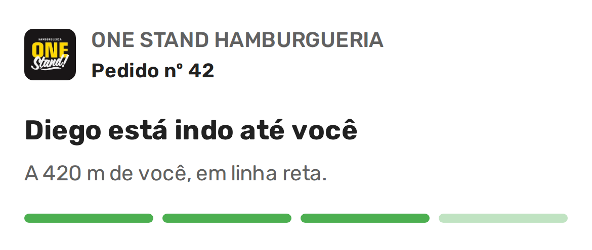
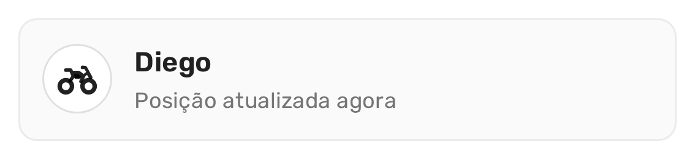

Quem pediu lê o primeiro nome do entregador e quantos metros faltam até a porta, em linha reta, e vê a moto se mexer sem tocar em nada. É mais do que qualquer um do seu balcão conseguiria responder no telefone.

